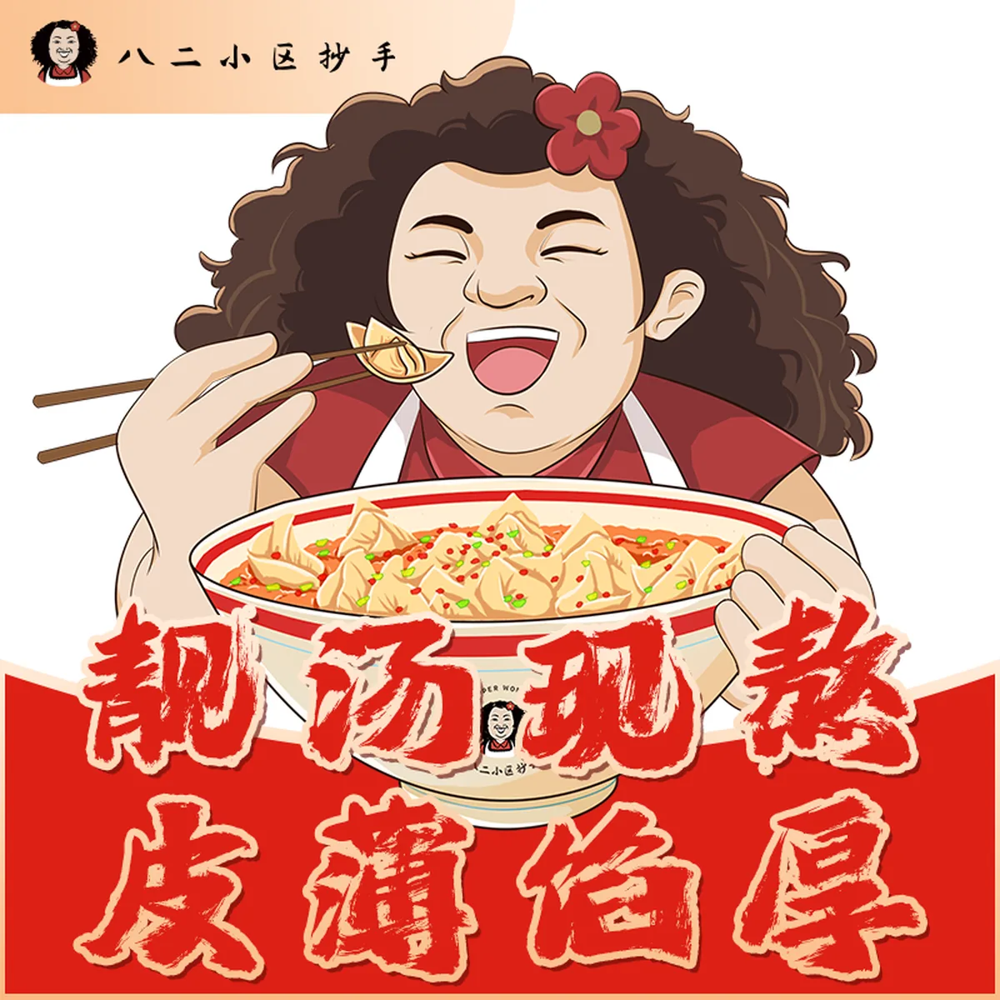

产品说真话
用真实菜品、真实口感和真实制作动作建立食欲，不靠空泛“匠心”。
Our Story
八二小区抄手的品牌感，不来自做旧滤镜，而来自真实的社区关系、直爽表达与一碗热腾腾的产品。

Brand Character
热情、直接、
有味道，也有分寸。
品牌人物是亲切的社区主理人形象；在官网中作为导览与情绪符号出现，不替代真实产品和门店内容。
Values
用真实菜品、真实口感和真实制作动作建立食欲，不靠空泛“匠心”。
成都与建设巷是味觉和性格来源，而不是表面贴一层城市符号。
不同城市保持同一品牌骨架，同时允许店招与内容保留地域版本。
Visual Language
官网不使用大面积高饱和红底轰炸，也不做杂乱复古拼贴；通过清晰网格和充足留白保持现代餐饮品牌秩序。